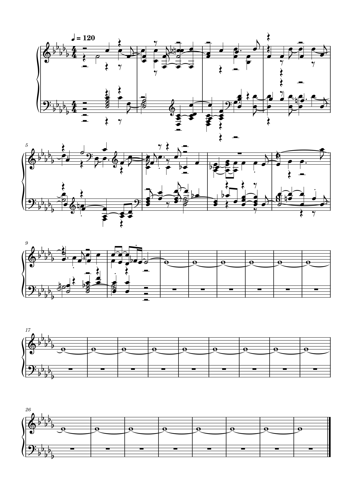

Week 10 🎝 Audio Similarity & Transcription
Task 1: Similarity
🎝 Open the same Python notebook from Tuesday's group activity
🎝 Replace the country tracks with 3 tracks that relate to your portfolio's theme (or the same tracks you used in last week's individual lab)
🎝 Generate a similarity matrix. This involves:
🎝 Extracting the Chroma features in SonicVisualizer
🎝 Exporting the features as a CSV
🎝 Save the code and notebook and save the visualization of the similarity matrix as an image for your portfolio
answer
Task 2: Transcription
🎝 Open your piece of music from Week 2 in MuseScore.
🎝 Export it as a WAV file and as an image file
🎝 Open the WAV file in SonicVisualizer
🎝 Transcribe the file using the same process as the Group activity on Tuesday
🎝 Open the MIDI file in MuseScore
🎝 Export it as an image
🎝 In your portfolio, display both images and compare the transcription, reflecting on its accuracy and identifying any information that has been lost (max 200 words)
My original transcribed score
My original transcribed score
